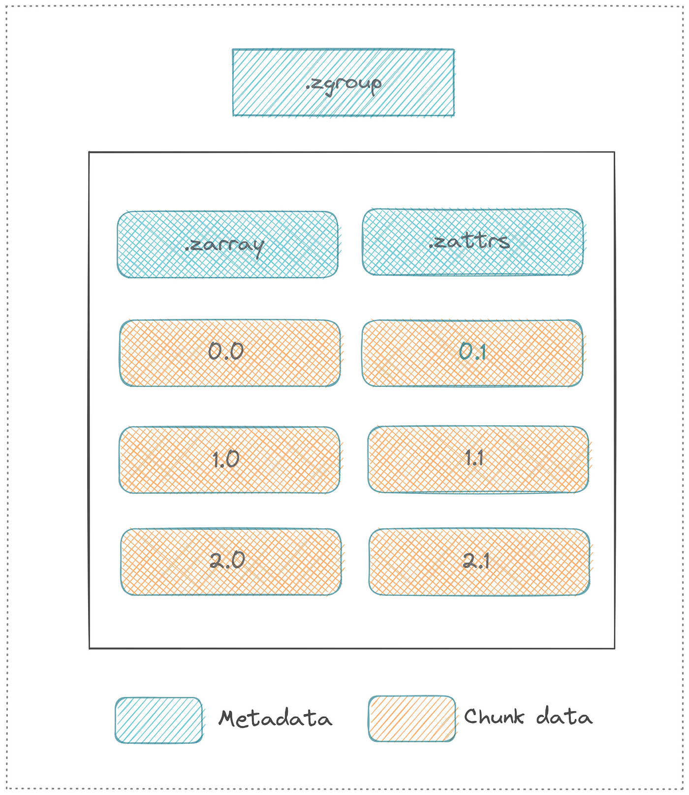

import pandas as pd
import numpy as np
import zarr
import xarray as xr
import gcsfs14 Zarr for Cloud Data Storage
14.1 Learning Objectives
14.2 Introduction
Cloud computing is distributed - meaning that files and processes are spread around different pieces of hardware that may or may not be located in the same place. There is great power in this - it enables flexibility and scalability of systems - but there are challenges associated with it too. One of those challenges is data storage and access. Medium sized datasets, like we have seen so far, work great in a netCDF file accessed by tools like xarray. What happens though, when datasets get extremely large (multiple terabytes)? Storing a couple of TB of data in a single netCDF file is not practical in most cases - especially when you are trying to leverage distributed computing where those data would be more efficiently accessed if they were in multiple files. Of course, one could (and many have) artificially split that terabyte scale dataset into multiple files, such as daily observations. This is fine - but what if even the daily data is too large for a single file? The Zarr file format is meant to solve these problems and more, making it easier to access data on distributed systems.
“Zarr is a file storage format for chunked, compressed, N-dimensional arrays based on an open-source specification.” If this sounds familiar - it should! Zarr shares many characteristics in terms of functionality and design with NetCDF. Below is a mapping of NetCDF and Zarr terms from the NASA earthdata wiki
| NetCDF Model | Zarr Model |
|---|---|
| File | Store |
| Group | Group |
| Variable | Array |
| Attribute | User Attribute |
| Dimension | (Not supported natively) |
The first of these terms highlights the biggest difference between NetCDF and Zarr. While NetCDF is a file, the Zarr model instead considers a “store.” Rather than storing all of the data in one file, Zarr stores data in a directory where each file is a chunk of data. Below is a diagram, also from the earthdata wiki, showing an example layout.

In this layout diagram, key elements of the Zarr specification are introduced.
- Array: a multi-dimensional, chunked dataset
- Attribute: ancillary data or metadata in key-value pairs
- Group: a container for organizing multiple arrays or sub-groups within a hierarchical structure
- Metadata: key information enabling correct interpretation of stored data format, eg shape, chunk dimensions, compression, and fill value.
The chunked arrays and groups allow for easier distributed computing, and enable a high degree of parallelism. Because the chunks are in seperate files, you can run concurrent operations on different parts of the same dataset, and the dataset itself can exist on multiple nodes in a cluster or cloud computing configuration. A high degree of flexibility in compression and filtering schemes also means that chunks can be stored extremely efficiently. Finally, and importantly, Zarr integrates seamlessly into existing python tools like xarray and dask for data processing.
14.3 Using Zarr
Zarr is a file format, which has implementations in several languages. The primary implementation is in Python, but there is also support in Java and R. Here, we will look at an example of how to use the Zarr format by looking at some features of the zarr library and how Zarr files can be opened with xarray.
14.4 Retrieving CMIP6 Data from Google Cloud
Here, we will show how to uze Zarr and xarray to read in the CMIP 6 climate model data from the World Climate Research Program, hosted by Googe Cloud. This demonstration is based off of an example put together by Pangeo
First, we will read in a csv file containing information about all of the stores associated with this dataset. First we’ll load some libraries.
Next, we’ll read in the csv.
df = pd.read_csv('https://storage.googleapis.com/cmip6/cmip6-zarr-consolidated-stores.csv')
df.head()| activity_id | institution_id | source_id | experiment_id | member_id | table_id | variable_id | grid_label | zstore | dcpp_init_year | version | |
|---|---|---|---|---|---|---|---|---|---|---|---|
| 0 | HighResMIP | CMCC | CMCC-CM2-HR4 | highresSST-present | r1i1p1f1 | Amon | ps | gn | gs://cmip6/CMIP6/HighResMIP/CMCC/CMCC-CM2-HR4/... | NaN | 20170706 |
| 1 | HighResMIP | CMCC | CMCC-CM2-HR4 | highresSST-present | r1i1p1f1 | Amon | rsds | gn | gs://cmip6/CMIP6/HighResMIP/CMCC/CMCC-CM2-HR4/... | NaN | 20170706 |
| 2 | HighResMIP | CMCC | CMCC-CM2-HR4 | highresSST-present | r1i1p1f1 | Amon | rlus | gn | gs://cmip6/CMIP6/HighResMIP/CMCC/CMCC-CM2-HR4/... | NaN | 20170706 |
| 3 | HighResMIP | CMCC | CMCC-CM2-HR4 | highresSST-present | r1i1p1f1 | Amon | rlds | gn | gs://cmip6/CMIP6/HighResMIP/CMCC/CMCC-CM2-HR4/... | NaN | 20170706 |
| 4 | HighResMIP | CMCC | CMCC-CM2-HR4 | highresSST-present | r1i1p1f1 | Amon | psl | gn | gs://cmip6/CMIP6/HighResMIP/CMCC/CMCC-CM2-HR4/... | NaN | 20170706 |
CMIP6 is an extremely large collection of datasets, with their own terminology. We’ll be making a request based on the experiment id (scenario), table id (tables are organized roughly by themes), and variable id.
For this example, we’ll select data from a simulation of the recent past (historical) from the Ocean monthly (Omon) table, and select the sea surface height (tos) variable. We’ll also only select results from NOAA Geophysical Fluid Dynamics Laboratory (NOAA-GFDL) runs.
df_ta = df.query("activity_id=='CMIP' & table_id == 'Omon' & variable_id == 'tos' & experiment_id == 'historical' & institution_id == 'NOAA-GFDL'")
df_ta| activity_id | institution_id | source_id | experiment_id | member_id | table_id | variable_id | grid_label | zstore | dcpp_init_year | version | |
|---|---|---|---|---|---|---|---|---|---|---|---|
| 995 | CMIP | NOAA-GFDL | GFDL-ESM4 | historical | r3i1p1f1 | Omon | tos | gr | gs://cmip6/CMIP6/CMIP/NOAA-GFDL/GFDL-ESM4/hist... | NaN | 20180701 |
| 996 | CMIP | NOAA-GFDL | GFDL-ESM4 | historical | r3i1p1f1 | Omon | tos | gn | gs://cmip6/CMIP6/CMIP/NOAA-GFDL/GFDL-ESM4/hist... | NaN | 20180701 |
| 1023 | CMIP | NOAA-GFDL | GFDL-ESM4 | historical | r2i1p1f1 | Omon | tos | gr | gs://cmip6/CMIP6/CMIP/NOAA-GFDL/GFDL-ESM4/hist... | NaN | 20180701 |
| 1030 | CMIP | NOAA-GFDL | GFDL-ESM4 | historical | r2i1p1f1 | Omon | tos | gn | gs://cmip6/CMIP6/CMIP/NOAA-GFDL/GFDL-ESM4/hist... | NaN | 20180701 |
| 9976 | CMIP | NOAA-GFDL | GFDL-CM4 | historical | r1i1p1f1 | Omon | tos | gr | gs://cmip6/CMIP6/CMIP/NOAA-GFDL/GFDL-CM4/histo... | NaN | 20180701 |
| 9977 | CMIP | NOAA-GFDL | GFDL-CM4 | historical | r1i1p1f1 | Omon | tos | gn | gs://cmip6/CMIP6/CMIP/NOAA-GFDL/GFDL-CM4/histo... | NaN | 20180701 |
| 245207 | CMIP | NOAA-GFDL | GFDL-ESM4 | historical | r1i1p1f1 | Omon | tos | gn | gs://cmip6/CMIP6/CMIP/NOAA-GFDL/GFDL-ESM4/hist... | NaN | 20190726 |
| 245208 | CMIP | NOAA-GFDL | GFDL-ESM4 | historical | r1i1p1f1 | Omon | tos | gr | gs://cmip6/CMIP6/CMIP/NOAA-GFDL/GFDL-ESM4/hist... | NaN | 20190726 |
First we need to set up a connection to the Google Cloud Storage file system (GCSFS).
gcs = gcsfs.GCSFileSystem(token='anon')Now, we’ll set the path to the most recent store from the table above, and create a mapping to the store using the connection to the Google Cloud Storage system.
zstore = df_ta.zstore.values[-1]
mapper = gcs.get_mapper(zstore)Finally, we open the store using xarray and examine its metadata.
ds = xr.open_zarr(mapper)
dsFrom here, we can easily grab a time slice and make a plot of the data.
ds.tos.sel(time='1999-01').squeeze().plot()We can also get a timeseries slice, here on the equator in the Eastern Pacific.
ts = ds.tos.sel(lat = 0, lon = 272, method = "nearest")And make a plot with a rolling annual mean.
ts.plot(label = "monthly")
ts.rolling(time = 12).mean().plot(label = "rolling mean")14.5 Creating a Zarr Dataset
Create an array of 10,000 rows and 10,000 columns, filled with zeros, divided into chunks where each chunk is 1,000 x 1,000.
import zarr
import numpy as np
z = zarr.zeros((10000, 10000), chunks=(1000, 1000), dtype='i4')
z<zarr.core.Array (10000, 10000) int32>We can then do normal numpy type things on our array:
z[0, :] = np.arange(10000)
z[:]array([[ 0, 1, 2, ..., 9997, 9998, 9999],
[ 0, 0, 0, ..., 0, 0, 0],
[ 0, 0, 0, ..., 0, 0, 0],
...,
[ 0, 0, 0, ..., 0, 0, 0],
[ 0, 0, 0, ..., 0, 0, 0],
[ 0, 0, 0, ..., 0, 0, 0]], dtype=int32)We can also save the file:
zarr.save('data/example.zarr', z)And open it:
arr = zarr.open('data/example.zarr')
arr<zarr.core.Array (10000, 10000) int32>specify compression
from numcodecs import Blosc
compressor = Blosc(cname='zstd', clevel=3, shuffle=Blosc.BITSHUFFLE)
data = np.arange(100000000, dtype='i4').reshape(10000, 10000)
z = zarr.array(data, chunks=(1000, 1000), compressor=compressor)can organize arrays via groups
root = zarr.group()
temp = root.create_group('temp')
precip = root.create_group('precip')assign arrays to groups
t100 = temp.create_dataset('t100', shape=(10000, 10000), chunks=(1000, 1000), dtype='i4')
t100<zarr.core.Array '/temp/t100' (10000, 10000) int32>access groups
root['temp']
root['temp/t100'][:, 3]array([0, 0, 0, ..., 0, 0, 0], dtype=int32)examine the tree
root.tree()root.info| Name | / |
| Type | zarr.hierarchy.Group |
| Read-only | False |
| Store type | zarr.storage.MemoryStore |
| No. members | 2 |
| No. arrays | 0 |
| No. groups | 2 |
| Groups | precip, temp |